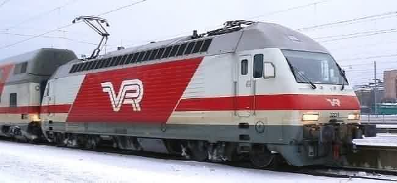
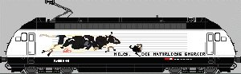
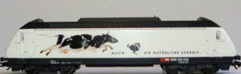
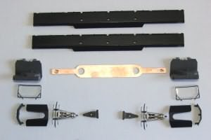
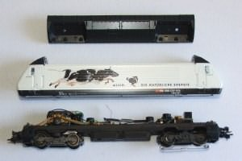
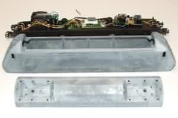
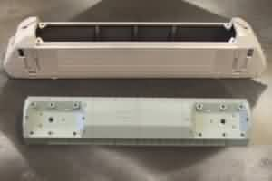
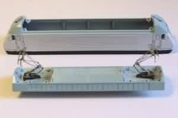
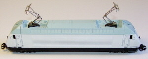
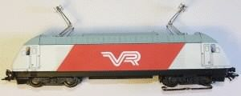

NAVIGATION
TOP of Page
MAIN Page
HOME Page
Finnish Sr2
Information
Overview of Sr2
Requirements
Processes
|
Converting A Marklin Swiss Re460 To A Finnish Sr2
Build a Marklin model of the Finnish Railways Sr2 Electric Loco.
Marklin produce models of the Swiss Re460 and the Norwegian EL18, but not the similar broad gauge
Finnish Sr2. This project details the conversion of a Swiss Re460 model into an Sr2. Work includes
stripping, painting and an application of decals, to end up with a distinctive Marklin AC model.
 Finnish Railways (VR) Sr2 class leader 3201
TOP
MAIN
HOME
Overview Of The Finnish Sr2 Electric Locomotive
Normally disdaining modern (bogie motored) electric locos as electric boxes, I have become an enthusiast
of the Swiss 'Lok 2000' 6.1MW 230km/hr electric locomotive known as the Re460. The Pininfarina designed
body with its' Swiss and Scandinavian versions converted me. Variants include the Swiss BLS Re465, the
Norwegian NSB EL18 and the
Finnish VR Sr2.
There is even an angular looking Chinese version of the locomotive, produced in 2 rail model form by Bachmann.
A recent eBay purchase of a Marklin NSB EL18 and ownership of two Re460's led me to wonder if a Marklin
VR Sr2 was available. Googling "Marklin Sr2" found no trace of a Marklin model. However, I found an article
by Juha Telimaa of Finland:
VR Sr2
describing the conversion of a Marklin Re460 into an Sr2. He also describes Finnish conversions of several
other Marklin locos including the Russian built
VR Sr1 'Siberian Wolf' - the
predecessor of the Sr2.
This article is an attempt to reproduce the work of Juha and build the first Marklin model of the Sr2 in
Australia. Creation of the Sr2 requires removal of some components, stripping paint, priming and repainting
the model, then reassembly and detailing the body with decals printed on a home computer. A single eBay bid
of $US 99 procured an excellent Marklin 34612 for a total just shy of $AUS 150 including postage. The all up
cost of the finished Sr2 loco will be less than $AUS 250.
TOP
MAIN
HOME
Requirements For This Project
|
Locomotive:
|
Marklin model of SBB Re460.
|
|
Paint Stripper:
|
Solar paint stripper
|
|
Primer:
|
Dulux 'Quit Rust' Acid Etch Metal Primer
|
|
Paint (Spray Cans):
|
White Knight Rust Guard Sky Grey
|
|
|
Tamiya TS-27 Matt White
|
|
|
Tamiya TS-6 Matt Black
|
|
Masking Tape (Roll):
|
Scotch 2040
|
|
Decals:
|
Bare Metal Foil company
|
TOP
MAIN
HOME
Processes Carried Out In This Project
|

|
The Original Model:
The Marklin 34612 model of the SBB Re460 021-9 electric locomotive named "Lovely".
It is fully digital and has "Milk - Natural Energy" logos, in French on one side and German on the other.
|
|

|
Detailing Differences:
The loco has had the pantographs removed to display the detailing differences between the Swiss and Finnish
locos. The Sr2 does not have the inner and outer protective shields for the pantographs, or the skirting
between the bogies.
|
|

|
The Parts Removed for Painting:
Centred at the top are the two skirts and the pantograph buss-bar. Surrounding these are the cabin interiors,
the windscreens, the inner and the outer pantograph protective shields, the pantographs and the pantograph
mounts. The windscreen, all windows (not pictured) and the headlights (not pictured) have been removed by
pushing gently from the inside. The handrails have been bent straight and removed.
|
TOP
MAIN
HOME
|

|
The Main Components:
The loco breaks down into three main components for painting:
1) Roof - painted Sky Grey.
2) Body Shell - painted White, except for Sky Grey above the Roof line and Matt Black below the Buffer line
to hide the SBB information. Use Masking Tape to define the lines.
3) Underbody - only requires the removal of the skirts by rotating upwards from the bottom to undo the clips,
otherwise left as is.
|
|

|
Stripping the Loco:
The loco body and the roof have been stripped by the application of paint stripper from a sash brush. Be careful
not to splash the paint stripper as it caustic. If this happens, application of Ungvita ointment will alleviate
the pain.
Wash the stripped loco and the brush in detergent. Dry the loco thoroughly with a clean cloth. Spray the outer
and inner surfaces of the body and roof with primer. Wait several hours for the primer to dry, then respray.
|
TOP
MAIN
HOME
|

|
Painting the Locomotive Undercoat:
Dissolve the thinners by placing the spray can in a small bowl of warm water for a few minutes. Then shake the
can thoroughly for a minute. Spray to beyond the edge of the job in several sweeps of thin coats. Slowly build
up a paint layer to prevents paint runs. Spray the loco body externals with the Matt White. The roof is painted
Sky Grey on top and bottom. Wait several hours and apply a second coat to both.
|
|

|
Painting the Locomotive Detail Areas:
After the base layers on the body, mask off the area below the top of the windscreen line.
This will line up with the bottom of the roof, unlike the Re460 which has a line slightly
above the line of the roof. Seal the edges of the masking tape to ensure no paint over runs.
Paint this area with two coats of the Sky Grey roof colour. When fully dry, Mask off the
line above the front and rear cutouts for the buffers. Paint this area two coats of Matt Black.
|
TOP
MAIN
HOME
|

|
Reassembly:
Getting to this point will give you a real sense of achievement. When fully dry you can
reassemble the loco. Test the pantographs to ensure they are not shorting to chassis.
The Windscreen, windows, cabin interiors, headlights and light pipes for the top headlight
can now be reinstalled. Screw the roof to the cabin.
|
|
Printing the Decals:
The high quality decals provided by Juha have to be reduced to 61% to be the correct size.
I have done the reduction and converted it to a 2 colour GIF graphic to save memory.
Click on Decals to download.
|
|

|
Locating the Decals:
The main decal should be applied as per this picture which uses a temporary paper print.
Note where the main decal is situated in regard to the edge of the body corrugations,
the roof line and buffer line. There is a small gap to the nose decals - refer the main picture.
|
TOP
MAIN
HOME
|